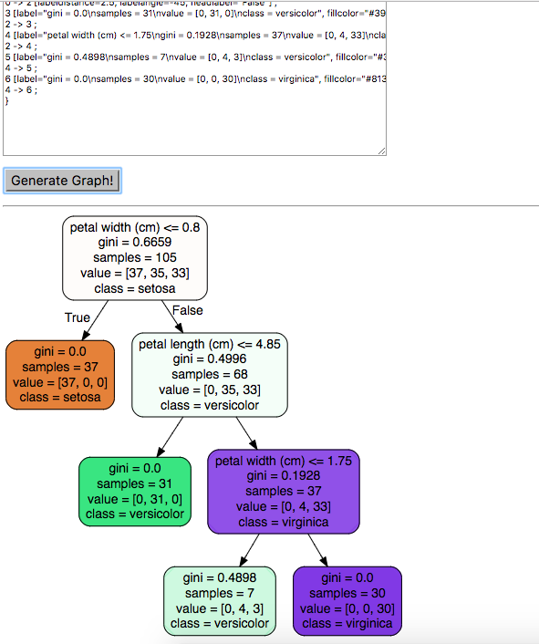
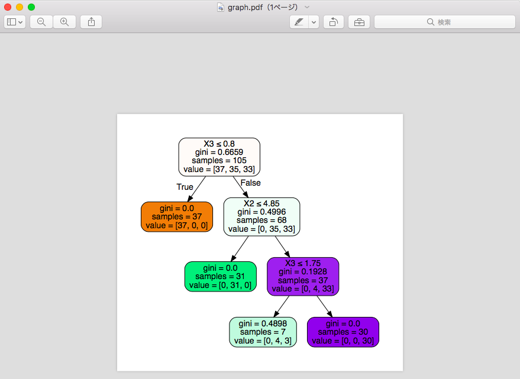

Phân tích cây quyết định với scikit-learn
Phân tích cây quyết định (Decision Tree Analysis)
Cây quyết định là một phương pháp phổ biến trong việc khai phá dữ liệu. Cây quyết định là mô hình hỗ trợ ra quyết định dựa trên đồ thị các điều kiện. Tại mỗi nút, ta sẽ đối chiếu các điều kiện thực tế để quyết định rẽ nhánh nào. Nút lá là quyết định cuối cùng.
Trong họ hàng nhà cây quyết định có 2 loại:
- Cây hồi quy (
Regression tree) ước lượng các hàm giá có giá trị là số thực thay vì được sử dụng cho các nhiệm vụ phân loại. (ví dụ: ước tính giá một ngôi nhà hoặc khoảng thời gian một bệnh nhân nằm viện) - Cây phân loại (
Classification tree), phân loại như: giới tính (nam hay nữ), kết quả của một trận đấu (thắng hay thua).
Vậy nó có ưu điểm gì không ?
Ưu điểm của việc phân tích cây quyết định
So với các các phân tích dữ liệu khác thì việc sử dụng cây quyết định có các ưu điểm như sau:
- Học những đặc trưng từ data đầu vào, đầu ra là kết quả với hình dạng cây quyết định. Nghĩa là dễ dàng nhìn thấy đặc trưng của data đầu vào.
- Các loại phương pháp khác cần công việc tiền xử lý rất nhiều, còn với cây quyết định thì hầu như là không cần công đoạn tiền xử lý.
- Với các loại phân tích như Neural Network được coi như kiểu model hộp đen (nói đơn giản là bạn không hiểu trong hộp có gì, xử lý ra sao) thì Decision Tree giống như model hộp trắng.
- Hỗ trợ đánh giá độ chính xác của các model được tạo ra. Ở đây các model chính là các cây quyết định được tạo trong quá trình xử lý theo phương pháp này.
Thuật toán cây quyết định
Để phân tích cây quyết định thì có khá nhiều phương pháp, sự khác nhau như sau:
- ID3
ID3 (Iterative Dichotomiser 3) được phát triển vào nào 1986 bởi Ross Quinlan. Sử dụng lượng thông tin ứng với biến số phân loại sau đó dùng kỹ thuật tham lam ( = lựa chọn tối ưu địa phương ở mỗi bước đi với hy vọng tìm được tối ưu toàn cục )
Ví dụ như thuật toán tìm đường đi ngắn nhất của Dijkstra - C4.5
Được phát triển từ ID3. C4.5 là thuật toán phân lớp dữ liệu dựa trên cây quyết định hiệu quả và phổ biến trong những ứng dụng khai phá cơ sở dữ liệu có kích thước nhỏ.
So với ID3, C4.5 không cần biến số phân loại lượng đặc trưng. Output theo dạng if-then, không hiển thị những phần cành không cần thiết. - C5.0
Là bản cải tiến của C4.5. Giúp cải thiện vấn đề hiệu năng và sử dụng ít bộ nhớ hơn. - CART
CART (Classification and Regression Trees) khá giống với C4.5. Được phát triển bởi Breiman năm 1984. Tạo cây phân tích dựa trên biến phân loại, giải thích, mục đính và hồi quy. Và scikit-learn có chứa phiên bản tối ưu hoá của CART.
Tạo cây quyết định trên scikit-learn
Tạo ra mô hình cây quyết định dựa trên dữ liệu thực tế, sau đó tiến hành đánh giá các mô hình đó. Trên python, nếu sử dụng scikit-learn thì công việc rất dễ dàng bằng việc sử dụng class sklearn.tree.DecisionTreeClassifier
sklearn.tree.DecisionTreeClassifier(criterion='gini',
splitter='best', max_depth=None, min_samples_split=2,
min_samples_leaf=1, min_weight_fraction_leaf=0.0,
max_features=None, random_state=None,
max_leaf_nodes=None, class_weight=None, presort=False)
Lần này ví dụ sẽ sử dụng data Iris, có sẵn theo gói thư viện scikit-learn. Tiến hành phân loại hoa Iris, hay còn gọi là hoa cầu vồng, dựa theo độ rộng, dài của cánh hoa, cuống hoa. Hoa Iris rất đa dạng, tầm 150 loại. Chiều rộng, chiều dài của cánh hoa, tràng hoa sẽ là biến số giải thích, biến số mục đích là loại hoa để tiến hành tạo cây quyết định.
>>> # load dữ liệu
>>> from sklearn.datasets import load_iris
>>> iris = load_iris()
>>> # biến giải thích (tương ứng với chiều rộng, dài của đài hoa, cánh hoa)
>>> iris.data
array([[ 5.1, 3.5, 1.4, 0.2],
[ 4.9, 3. , 1.4, 0.2],
[ 4.7, 3.2, 1.3, 0.2],
[ 4.6, 3.1, 1.5, 0.2],
... (lược bớt)
[ 5.9, 3. , 5.1, 1.8]])
>>> # biến mục đích (0, 1, 2 tương ứng với 3 loại hoa)
>>> iris.target
array([0, 0, 0, 0, 0, 0, 0, 0, 0, 0, 0, 0, 0, 0, 0, 0, 0, 0, 0, 0, 0, 0, 0,
0, 0, 0, 0, 0, 0, 0, 0, 0, 0, 0, 0, 0, 0, 0, 0, 0, 0, 0, 0, 0, 0, 0,
0, 0, 0, 0, 1, 1, 1, 1, 1, 1, 1, 1, 1, 1, 1, 1, 1, 1, 1, 1, 1, 1, 1,
1, 1, 1, 1, 1, 1, 1, 1, 1, 1, 1, 1, 1, 1, 1, 1, 1, 1, 1, 1, 1, 1, 1,
1, 1, 1, 1, 1, 1, 1, 1, 2, 2, 2, 2, 2, 2, 2, 2, 2, 2, 2, 2, 2, 2, 2,
2, 2, 2, 2, 2, 2, 2, 2, 2, 2, 2, 2, 2, 2, 2, 2, 2, 2, 2, 2, 2, 2, 2,
2, 2, 2, 2, 2, 2, 2, 2, 2, 2, 2, 2])
Sau đó cắt data thành 2 phần: training data và test data.
from sklearn.model_selection import train_test_split
X_train, X_test, y_train, y_test = train_test_split( iris.data, iris.target, test_size = 0.3)
# test_size: 30% là test data còn lại 70% để làm train data.
Tiến hành tạo cây quyết định
>>> # tạo model
>>> from sklearn import tree
>>> clf = tree.DecisionTreeClassifier(max_depth=3)
>>> #max_depth = 3 là độ sâu của cây quyết định
>>> clf = clf.fit(X_train, y_train)
Ok, giờ sử dụng model đã tạo phía trên tiến hành dự đoán kết quả loài hoa nào ứng với mỗi X_test(lưu biến giải thích).
>>> # Thực hiện dự đoán kết quả từ những thông số biến giải thích đầu vào
>>> predicted = clf.predict(X_test)
>>> # Kết quả suy đoán
>>> predicted
array([2, 0, 0, 2, 0, 2, 0, 0, 0, 2, 0, 0, 0, 1, 2, 0, 0, 1, 2, 0, 2, 2, 0,
1, 1, 1, 0, 1, 1, 0, 0, 1, 0, 1, 1, 0, 0, 2, 0, 1, 1, 0, 1, 0, 2])
Không biết tỷ lệ đúng được bao nhiêu nhỉ. Chúng ta thử dùng phép chia đơn giản để biết. Thực tế có nhiều cách tính độ chính xác cũng như sai số của thuật toán nhưng mình sẽ giới thiệu ở các bài viết sau.
>>> sum(predicted==y_test)/float(len(y_test))
0.93333333333333335
Vậy là độ chính xác của kết quả là ~93%. Rất tuyệt vời nhỉ :D
Hiển thị cây quyết định
Chúng ta có thể tạo cây quyết định dưới dạng file DOT. Và từ file DOT sẽ sử dụng GraphViz hoặc webgraphviz để mở.
Như ví dụ sau, tên của các biến giải thích được setting như sau feature_names=iris.feature_names, tên của biến mục đích class_names=iris.target_names, muốn màu mè cho các nhánh thì setting filled=True, các góc của các nhánh bo tròn cho hoành tráng thì rounded=True.
>>> tree.export_graphviz(clf, out_file="tree.dot",
feature_names=iris.feature_names,
class_names=iris.target_names,
filled=True, rounded=True)
Bạn sẽ tạo được file .dot, có thể dùng trang http://www.webgraphviz.com/ để convert sang ảnh như sau:

Hoặc dùng package pydotplus convert sang pdf, png tiện lợi hơn. Chưa có thì có thể dễ dàng install với pip.
pip install pydotplus
>>> # import package pydotplus.
>>> import pydotplus
>>> dot_data = tree.export_graphviz(clf , out_file = None , filled = True , rounded = True , special_characters = True)
>>> graph = pydotplus.graph_from_dot_data(dot_data)
>>> graph.write_pdf("graph.pdf")

Vậy là đã có file graph.pdf, ngoài ra có thể tạo file png với graph.write_png("graph.png").
Với những người phân tích dữ liệu thì việc có thể quan sát cây quyết định rất tiện lợi cũng như nâng cao hiệu quả công việc đấy.